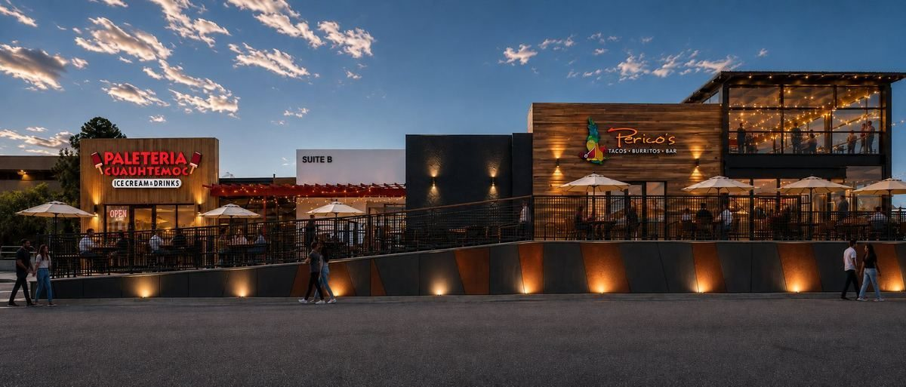

Artist's rendering
Eat. Drink.
Stay Awhile.
Three local places to eat and drink on Yale Blvd — 1.2 miles from the Albuquerque Sunport, minutes from the hotels, UNM and Kirtland. Real New Mexican food, handmade paletas, and New Mexico beer on tap.
- From the Sunport
- 1.2 mi · 3 Min
- Parking
- Free & On Site
- Patios
- Outdoor Seating
- Takeout
- Order Ahead
Eat + Drink
Three Local Places, One Parking Lot

Mexican + New Mexican
Perico's Tacos & Burritos
Family-owned in Albuquerque since 1982. Home of the half-pound burrito, with red or green chile that means it.
Order: shredded beef tacos · chicharrón burrito · chile relleno burrito · sopapillas

Paletas · Ice Cream · Aguas Frescas
Paletería Cuauhtémoc
Handmade Mexican paletas, shaved ice, milkshakes, elote and aguas frescas. The right move on a hot Albuquerque afternoon.
Order: fruit & cream paletas · aguas frescas · elote · prepared clamatos

Taproom · Wine · Coffee
FMV Brewing Co.
Upstairs, with a patio looking toward Downtown and the Sandias. Seven New Mexico beers on tap, cocktails on local spirits, coffee roasted in house.
On tap: Santa Fe Brewing · La Cumbre · Marble · Canteen
Before You Drive Over
Hours at a Glance
Getting Here
Wherever You're Coming From
Yale Landing sits on Yale Blvd between Gibson and the Sunport, with quick access to I-25 and I-40. Here's how far it is from the places people are usually coming from.

Visit
Where We Are
2500 Yale Blvd SE, Albuquerque, NM 87106. On Yale Blvd between Gibson and the Sunport, in the block with the dark wood façade and the patios out front.
Yale Blvd is the road into the airport, so you're 1.2 miles from the terminal, minutes from the hotel strip, and a short drive from UNM, the VA, Sandia National Laboratories and Kirtland Air Force Base.
Parking
Free surface lot, 480 shared spaces
Directions
Outdoor
Patios at every storefront
Common Questions
Eating Near the Albuquerque Airport
Where can I eat near the Albuquerque airport?
Yale Landing at 2500 Yale Blvd SE is 1.2 miles from the Sunport — about three minutes. Mexican and New Mexican food at Perico's, handmade paletas and aguas frescas at Paletería Cuauhtémoc, and New Mexico beer on tap at FMV Brewing Co. Free parking, and you can walk between all three.
How far is Yale Landing from the Albuquerque airport?
1.2 miles, about a 3-minute drive. Yale Blvd is the road into the Sunport, so it's straight up the street from the terminal.
Is there parking?
Yes — free surface parking on site, 480 shared spaces. Park once and walk to every business in the building.
What's open late?
Paletería Cuauhtémoc is open until 9pm every day. FMV Brewing pours until 9pm Wednesday through Saturday and 8pm Sunday. Perico's closes at 8pm weekdays and 7pm Saturday, and is closed Sunday.
Is there a brewery near the Sunport?
Yes. FMV Brewing Co. is upstairs in Suite G with seven New Mexico beers on tap, cocktails built on local spirits, and coffee roasted in house.
Leasing Two spaces are available at Yale Landing — inline retail with a patio, and a flex suite with 20-foot ceilings. Tenant improvement support available.
See Available Space